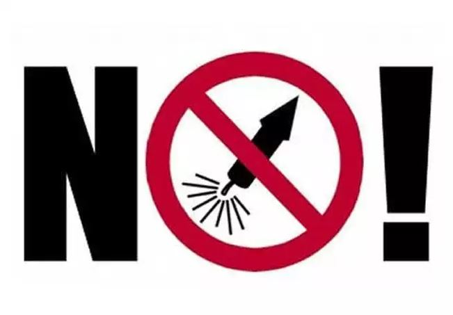
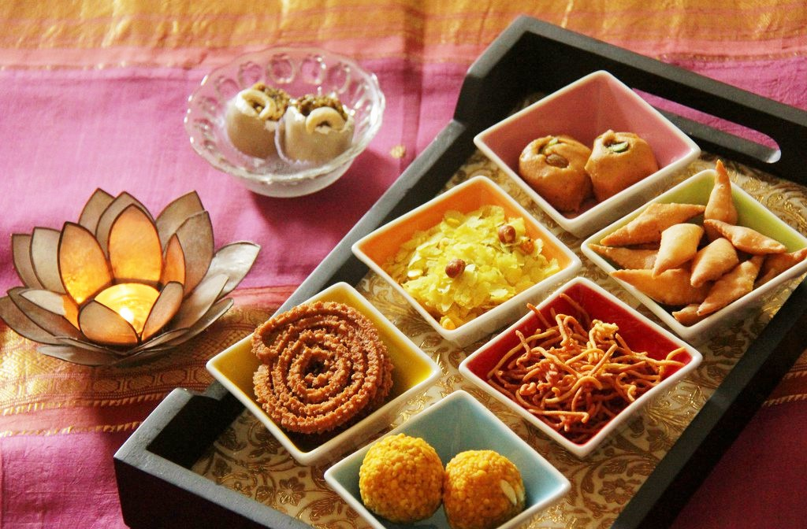

When lord rama came back from the jungle after 14 years, the people celebrated by lighting up ayodhya
using diyas, not crackers. Let us also celebrate in the same way.
HAPPY DIWALI!


This website is to tell you how can eco-friendly diwali can be celebrated. Please follow the
instructions below.
Click one of the buttons below to know about each topic: